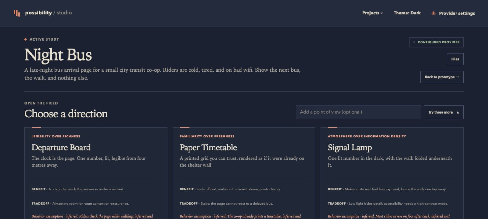
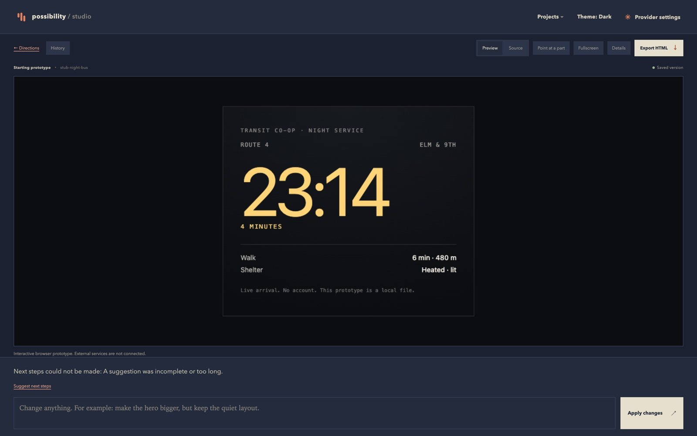
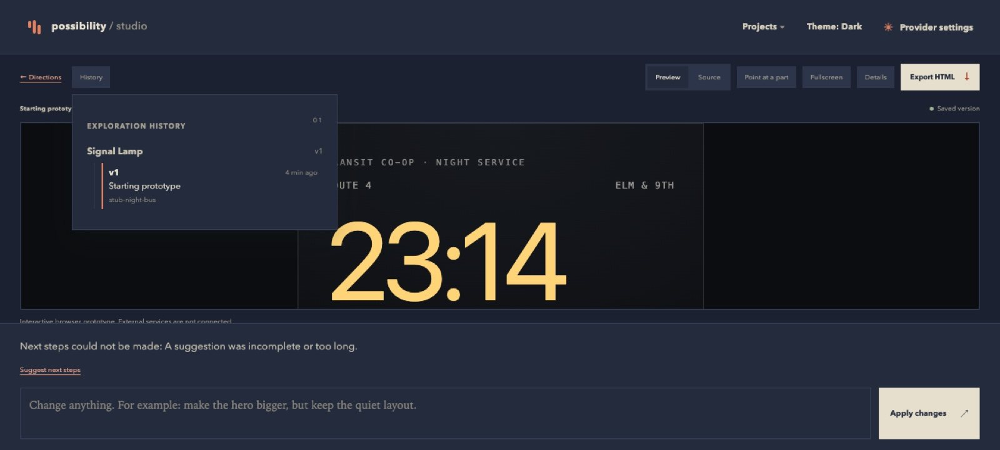
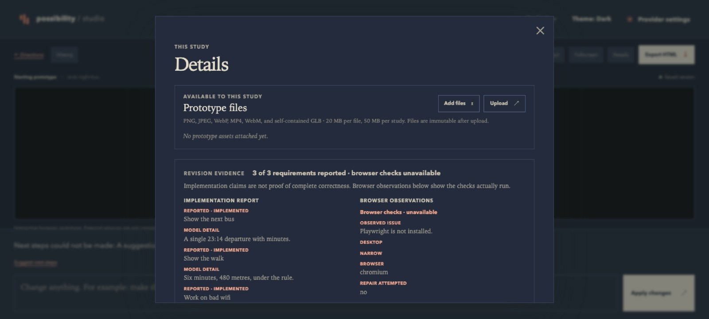
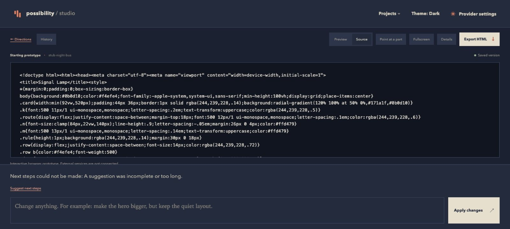

01Brief
Describe it.
One paragraph in plain English: what it is, who it is for, and how it should feel. Add a reference image if you have one.
The brief form and recent projects.
Possibility Studio / six screens
Describe the thing in plain English. You get three working HTML prototypes, each with a different layout and motion idea. Pick one, describe the changes you want, and export the file. Runs locally against any OpenAI-compatible provider.
One paragraph in plain English: what it is, who it is for, and how it should feel. Add a reference image if you have one.
Three directions come back, each with a different layout and motion idea. Read the tradeoff, then choose the one to build.

Full sizeThe prototype runs in the canvas. It is real HTML, so hover states and animations work.

Full sizeType an instruction like 'make the clock quieter', or point at a part. Each change becomes a new revision.

Full sizeSee what it says it built, which requirements passed, and what it assumed, before you trust the preview.

Full sizeDownload one standalone HTML file with assets inlined. No build step.

Full sizepip install -e '.[dev]' uvicorn studio.app:app --port 8310